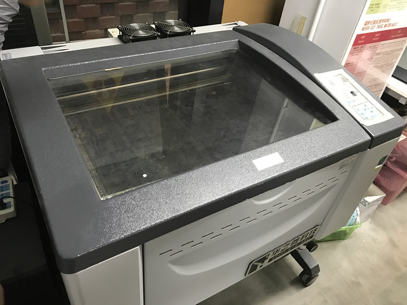
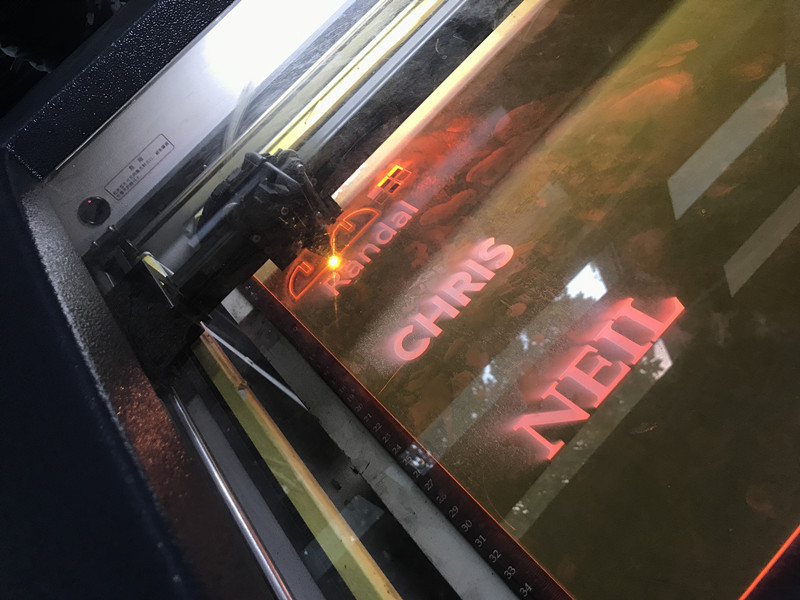
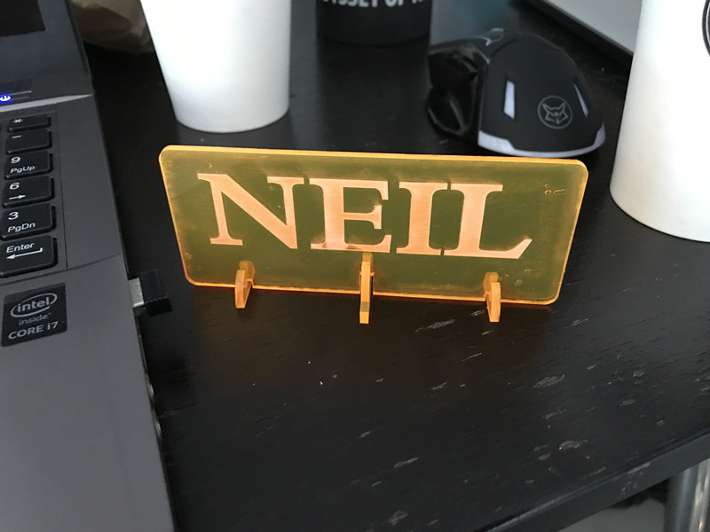

To do 2/3D design, we used the software called Rhino5, whos OS is pretty similar to 3dxmax.
Using this software wo can easily design a 2/3D model. As we just use the TOP perspective, we can make a 2d design which is a name tag.
To do so, wo use a laser cut machine

While working

However after we make the tag. We found the joints were losen

Then Saverio told us about the kerf. KERF is when the laser is working it burns the edge of the material, which is about 0.02mmm wide. Taking which into consideration we made the other work. It was fixed perfectly. And I designed the pattern in words There is difference between the lines for cutting through and for pattern. We use different colour to separate them. In the setting we change the settings for every colour